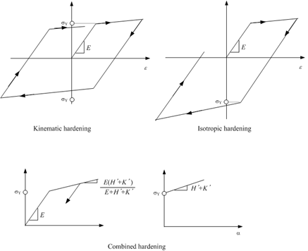
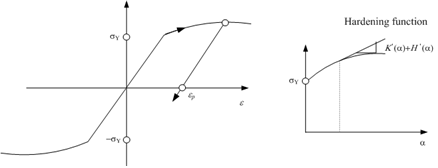
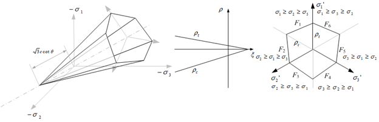
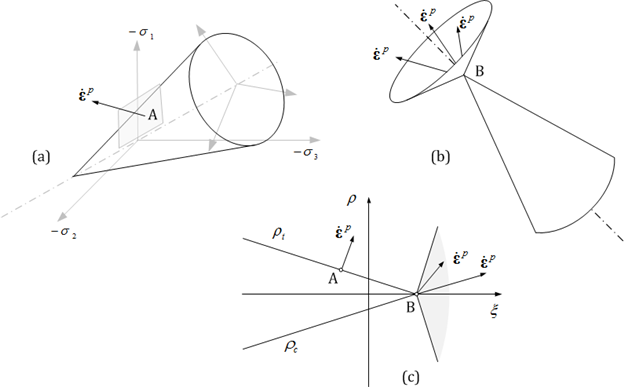
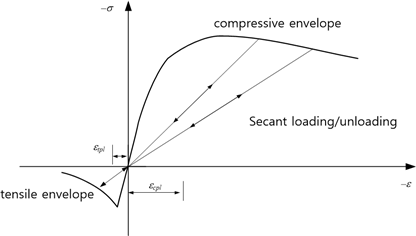
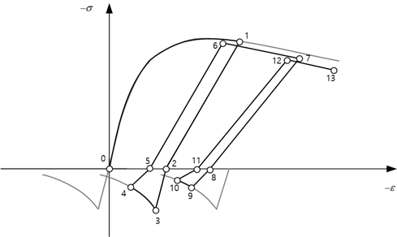
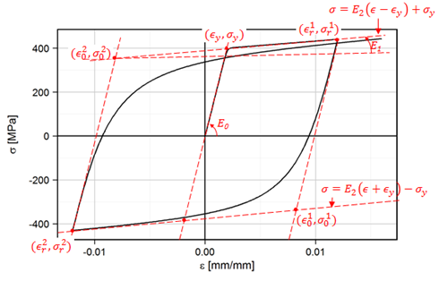
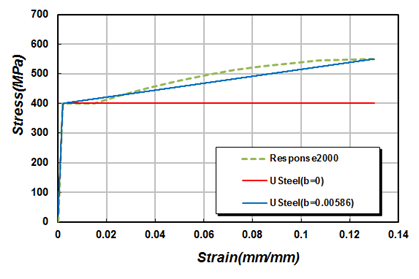

7. Material
Material models are defined using the *Material keyword. Each material must have a unique name, and duplicate names are not allowed. A material model is used to define various constitutive relationships, including the stress-strain relation, depending on the type of element.
| TYPE | Description | Usage |
|---|---|---|
| IsoElasticity | Isotropic Elasticity | Uniaxial and Multiaxial Stress-Strain Relation |
| OrthoElasticity | Orthotropic Elasticity | Multiaxial Stress-Strain Relation |
| vonMises | von Mises Plasticity | Uniaxial and Multiaxial Stress-Strain Relation |
| Tresca | Tresca Plasticity | Multiaxial Stress-Strain Relation |
| MohrCoulomb | Mohr Coulomb Plasticity | Multiaxial Stress-Strain Relation |
| DruckerPrager | Drucker Prager Plasticity | Multiaxial Stress-Strain Relation |
| UGeneric | Uniaxial Generic | Uniaxial Stress-Strain Relation |
| USteel | Uniaxial Steel | Uniaxial Stress-Strain Relation |
| GapHook | Uniaxial Gap-Hook | Uniaxial Stress-Strain Relation |
| Cohesive | Cohesive Material | Traction-Relative Displacement Relation |
| Acoustic | Acoustic Property | Property of Acoustic Element |
| Seepage | Seepage Property | Property of Seepage Element |
Stress-strain relations are broadly categorized into uniaxial and multiaxial types. The multiaxial type can be further divided into plane stress, plane strain, axisymmetric, shell, and general 3D stress conditions. Different element types require different types of stress-strain relations. For example, beam elements require uniaxial models, while shell elements require models that support shell-type multiaxial conditions. The vonMises model supports both uniaxial and multiaxial relations, so it can be used with beam elements. In contrast, the Tresca model only supports multiaxial relations, so it cannot be used with beam elements. Conversely, models such as UGeneric, USteel, and GapHook are uniaxial and thus cannot be used with solid or shell elements.
Uniaxial material models can also be borrowed to define constitutive relations for certain elements, such as Spring, EarthSpring, and MovingSpring elements. The following four types of relationships can be defined in this way:
- Force-Displacement: Translational spring
- Moment-Rotation: Rotational spring
- Force-Velocity: Translational damper
- Moment-Angular Velocity: Rotational damper
Additionally, uniaxial material models can be used when the behavior of an interface element is defined independently in each direction:
- Traction-Displacement: Interface element
In beam elements, uniaxial material models can also be applied to model nonlinear shear and torsional behavior similarly to springs:
- Scaled shear force–shear strain: Beam element
- Scaled torsional moment–rotation: Beam element
In such cases where uniaxial material models are borrowed, the stress-strain relationship is interpreted as the required form (e.g., force-displacement) without preserving the original physical meaning. For example, when a uniaxial material model is used for an X-direction spring, its stress-strain relation is treated as a force-displacement relation, with stress and force, strain and displacement converted in a one-to-one manner without physical equivalence.
When a unit system is introduced to the model using the *Environment, TYPE=UnitSystem command, care must be taken when changing the unit system globally in tools like hfVisualizer. For cases where uniaxial material models are borrowed, the unit system at the time of borrowing is recorded as a reference unit system. This allows proper internal conversion when the global unit system changes.
*Material
Define material
*Material, TYPE=type, Name=name
...data lines depending on type
Keyword line
-
TYPE=type: type of materials.
- IsoElasticity: Isotropic Linear Elastic Material
- OrthoElasticity: Orthotropic Linear Elastic Material
- vonMises: von Mises plasticity
- Tresca: Tresca plasticity
- MohrCoulomb: Mohr-Coulomb plasticity
- DruckerPrager: Drucker-Prager plasticity
- UGeneric: Uniaxial generic
- USteel: Uniaxial steel
- GapHook: Uniaxial gap-hook
- Cohesive: Cohesive material
- Acoustic: Material for acoustic solid elements
-
Name=name: material name
*Material Type=IsoElasticity
Define isotropic elasticity material
*Material, Type=IsoElasticity, Name=name
E, nu, alpha, density
First data line
- E: elastic modulus (required)
- nu: Poisson’s ratio (optional, default 0.)
- alpha: thermal expansion coefficient (optional, default 0.)
- density: density (optional, default 0.)
Example
*Material, Type=IsoElasticity Name=iso
200., 0.2 # E, nu, alpha, density
*Material Type=OrthoElasticity
Define orthotropic elasticity
*Material, Type=OrthoElasticity, Name=name
E1,E2,E3, G12,G23,G31, nu12,nu23,nu31, a1,a2,a3, density, angle, cs
First data line
- E1, E2, E3: Elastic moduli(required)
- G12, G23, G31: Shear moduli (required)
- nu12, nu23, nu31: Poisson's ratios(required)
- a1,a2,a3: thermal expansion coefficient (optional, default 0)
- density: density(optional, default 0.)
- angle: angle in laminar condition for *Section, TYPE=CompositeShell (optional, default 0.)
- cs: material coordinate system(optional). If not given, global coordinate system is used for material coordinates
Angle is the angle used to define the local coordinate system in the laminar stress condition when defining *Section, TYPE=CompositeShell. CS is used for all other stress conditions.
Example
*Material, Type=OrthoElasticity Name=ortho
200.,100.,100., 50.,30.,30., 0.12, 0.12, 0.12, 1E-6, 1.2E-6, 1.4E-4, 7810., 0, cs
# E1, E2, E3, G12, G23, G31, nu12, nu23, nu31, a1, a2, a3, density, angle, cs
*Material, Type=OrthoElasticity Name=ortho
200.,100.,100., 50.,30.,30., 0.12, 0.12, 0.12, 1E-6, 1.2E-6, 1.4E-4, 7810., 90
# E1, E2, E3, G12, G23, G31, nu12, nu23, nu31, a1, a2, a3, density, angle, cs
*Material Type=vonMises
Define von Mises plasticity(J2 plasticity)
*Material, Type=vonMises, Name=name
E, nu, alpha, density
yield, H, theta, Kinf, K0, delta
*Material, Type=vonMises, Name=name
E, nu, alpha, density
isoHardFunc, kinHardFunc|H
First data line
- E: elastic modulus (required)
- nu: Poisson’s ratio (optional, default 0.)
- alpha: themal expansion coefficient (optional, default 0.)
- density: density (optional, default 0.)
Second data line for value (when the first entry is not a function name)
- yield: Initial yield value (required)
- H: slope after initial yield (optional, default 0)
- theta: Mixed hardening parameter (optional, default 0)
- Kinf: Saturation hardening parameter (optional, default 0)
- K0: Saturation hardening parameter (optional, default 0)
- delta: Saturation hardening parameter (optional, default 0)
Second data line for function (when the first entry is a function name)
- isoHardFunc: Isotropic hardening function. (required)
- kinHardFunc or H: Kinematic hardening function or modulus(optional, default 0)
When specified as value
When specified as value, the following equation is applied.
- Linear mixed hardening model
- Saturation isotropic hardening and linear kinematic hardening model
\(\small\bar{H}\) is a constant, and when \(\small\theta = 0\), only kinematic hardening is applied, while when \(\small\theta = 1\), only isotropic hardening is applied. The condition \(\small 0 \le \theta \le 1\) must be satisfied. In the linear mixed hardening model, \(\small dK/d \kappa = (1-\theta)\bar{H}\) represents the isotropic hardening modulus, and \(\small (1-\theta) \bar{H}\) is the kinematic hardening modulus.
If the conditions \(\small\bar{K}_\infty = \bar{K}_0\) or \(\small\delta = 0\) are satisfied, it corresponds to linear mixed hardening. In linear mixed hardening, \(\bar{H}\) can take negative values; however, in the saturation isotropic hardening and linear kinematic hardening model, the conditions \(\small\bar{H} \ge 0\), \(\small\bar{K}_\infty \ge \bar{K}_0 \gt 0\), and \(\small\delta \ge 0\) must be satisfied.

Fig. 7.2-1. Linear hardening
When specified as function
If uniaxial tensile test results for the material are available, proper calibration can be performed using them. In this case, the appropriate use of Type=Function can be applied. One important point to note is that when both isotropic hardening and kinematic hardening are present, the second elastic modulus must be configured to satisfy the equation as shown in Figure 7.2-2.

Fig. 7.2-2. Nonlinear hardening
Example
# Linear isotropic hardening case
*Material, Type=vonMises, Name=steel1
2000000. # E, nu, alpha, density
3000., 300.,1. # yield, H, theta, Kinf, K0, delta
# Linear kinematic hardening case
*Material, Type=vonMises, Name=steel2
2000000. # E, nu, alpha, density
3000., 300., # yield, H, theta, Kinf, K0, delta
# Nonlinear isotropic hardening case
*Function, Type=MultiLinear, Name=isoFunc
0. 200.
0.01 210.
*Material, Type=vonMises, Name=steel3
200000. # E, nu, alpha, density
isoFunc # isoHardFunc, kinHardFunc|H
# Nonlinear isotropic hardening, linear kinematic hardening case
*Material, Type=vonMises, Name=steel4
200000. # E, nu, alpha, density
isoFunc, 20. # isoHardFunc, kinHardFunc|H
# Nonlinear isotropic/kinematic hardening case
*Material, Type=vonMises, Name=steel5
200000. # E, nu, alpha, density
isoFunc, kinFunc # isoHardFunc, kinHardFunc|H
*Material Type=Tresca
Define Tresca plasticity material model
*Material, Type=Tresca, Name=name
E, nu, alpha, density, StrainHardening|IsotropicHardening
{yield,dyield}|yieldFunc
First data line
- E: elastic modulus (required)
- nu: Poisson’s ratio (optional, default 0.)
- alpha: themal expansion coefficient (optional, default 0.)
- density: density (optional, default 0.)
- StrainHardening|IsotropicHardening: hardening type(optional, default “StrainHardening”)
Second data line
- yield,dyield: initial yield value(required), and the derivative after initial yielding(optional, default 0.)
- yieldFunc: yield function(required)
The Tresca material model has the following yield function and flow potential:
The hardening rule can apply strain hardening, work hardening, or the isotropic associative hardening rule. In the Tresca model, work hardening and associative isotropic hardening are identical.

Fig. 7.2-3. Tresca yield criteria
Example
*Function, Type=MultiLinear, Name=trYield
0. 0.
0.01 10.
0.02 15
# no hardening case with sy = 20.
*Material, Type=Tresca, Name=steelT1
2E6, 0.18, 1E-5, 7850 # E, nu, alpha, density
20 # yield, dyield
# linear hardening case with strain hardening
*Material, Type=Tresca, Name=steelT2
2E6, 0.18, 1E-5, 7850 # E, nu, alpha, density
20, 0.1 # yield, dyield
# linear hardening case with work hardening
*Material, Type=Tresca, Name=steelT3
2E6, 0.18, 1E-5, 7850 # E, nu, alpha, density
20, 0.1, StrainHardening|WorkHardening # yield, dyield, StrainHardening|WorkHardening
# nonlinear hardening case with work hardening
*Material, Type=Tresca, Name=steelT4
2E6, 0.18, 1E-5, 7850 # E, nu, alpha, density
trYield # yieldFunc
*Material Type=MohrCoulomb
Define Mohr-Coulomb material
*Material, Type=MohrCoulomb, Name=name
E, nu, alpha, density, StrainHardening|IsotropicHardening
{coh,dcoh}|cohFunc
{fric,dfric}|fricFunc
{dila,ddila}|dilaFunc
First data line
- E: elastic modulus (required)
- nu: Poisson’s ratio (optional, default 0.)
- alpha: themal expansion coefficient (optional, default 0.)
- density: density (optional, default 0.)
- StrainHardening|IsotropicHardening: hardening type(optional, default “StrainHardening”)
Second data line
- coh,dcoh: initial value (required) and derivative of cohesion (optional, default 0.)
- cohFunc: function name of cohesion function (required)
Third data line (frictional quantities)
- fric,dfric: initial value(required) and derivative of friction angle. (optional, default 0.)
- fricFunc: function name of friction angle function (required)
Fourth data line (dilatant quantities)
- dila,ddila: initial value and derivative of dilatant angle (default 0., 0.)
- dilaFunc: function name of dilatant function (optional)
The units for the frictional angle and dilatant angle are in degrees, not radians. If the value of the dilatant angle is equal to the frictional angle, the associative flow rule is applied. Otherwise, the non-associative flow rule is applied. The initial cohesion (cohesion0) must be specified as a non-zero value. When using the associative isotropic hardening (i.e., IsotropicHardening) as the hardening rule, constant frictional and dilatant angles must be used.
The Mohr-Coulomb material model uses the following yield function and plastic potential.

Fig. 7.2-4. Mohr-Coulomb yield criteria
The hardening rules include strain hardening and isotropic hardening. The Mohr-Coulomb model does not include work hardening.
Example
# associative flow rule, no hardening
*Material, TYPE=MohrCoulomb, Name=soil1
2E6, 0.18, 1E-5, 7850
20 # coh, dcoh
35 # fric, dfric
35 # dila, ddila
# associative flow rule, strain hardening
# linear hardening of cohesion, constant friction and dilatency
*Material, TYPE=MohrCoulomb, Name=soil2
2E6, 0.18, 1E-5, 7850
20,3.
35,
30.
# associative flow rule, associative isotropic hardening
# linear hardening of cohesion, constant friction and dilatency
*Material, TYPE=MohrCoulomb, Name=soil3
2E6, 0.18, 1E-5, 7850, IsotropicHardening
20,3.
35,
30.
# associative flow rule, associative isotropic hardening,
# linear hardening of cohesion, friction
*Material, TYPE=MohrCoulomb, Name=soil4
2E6, 0.18, 1E-5, 7850
20,3.
35, 0.2
35, 0.2
# non-associative flow rule, strain hardening,
# nonlinear hardening of cohesion, friction, dilatency
*Function, Name=cohFunc
0., 20.
0.001, 25.
0.002, 25.
*Function, Name=fricFunc
0. 35.
0.001, 40.
0.002, 45.
*Function, Name=dilaFunc
0. 30.
0.001 35.
0.002 40.
*Material, TYPE=MohrCoulomb, Name=soil5
2E6, 0.18, 1E-5, 7850
cohFunc
fricFunc
dilaFunc
*Material Type=DruckerPrager
Define Isotropic elasticity material
*Material, Type=DruckerPrager, Name=name
E, nu, alpha, density, StrainHardening|IsotropicHardening
beta
coh,dcoh|cohFunc,
af,daf|afFunc
ap,dap|apFunc
First data line
- E: elastic modulus (required)
- nu: Poisson’s ratio (optional, default 0.)
- alpha: themal expansion coefficient (optional, default 0.)
- density: density (optional, default 0.)
- StrainHardening|IsotropicHardening: hardening type(optional, default “StrainHardening”)
Second data line
- beta: beta (required)
3rd data line
- coh, dcoh: initial value(required) and derivative of cohesion (optional, default 0.,0.)
- cohFunc: function name of cohesion(required)
4th data line (frictional quantity)
- af, daf: initial value and derivative of alpha. ( default 0., 0.)
- afFunc: function name of alpha (required)
5th data line (dilatent quantity)
- ap, dap: initial value(required) and derivative of alphaP (dilatency) (optional, default 0.)
- apFunc: function name of alphaP (required)
The units for the frictional angle and dilatant angle are in degrees, not radians. If the value of the dilatant angle is equal to the frictional angle, the associative flow rule is applied. Otherwise, the non-associative flow rule is applied. The initial cohesion (cohesion0) must be specified as a non-zero value. When using the associative isotropic hardening (i.e., IsotropicHardening) as the hardening rule, constant frictional and dilatant angles must be used.
In the Drucker-Prager material model, the yield function and plastic potential are as follows.
▪ Flow potential : same to yield function
There are two types of hardening laws: strain hardening and isotropic hardening. In the Drucker–Prager model, work hardening does not exist.

Fig. 7.2-5. Flow rule of Drucker-Prager model
Example
*Material, TYPE=DruckerPrager, Name=concreteDP
2E6, 0.18, 1E-5, 7850, StrainHardening # E, nu, alpha, density, StrainHardening|IsotropicHardening
4 # beta
12.3 # coh,dcoh|cohFunc,
20 # af,daf|afFunc
20 # ap,dap|apFunc
*Material Type=UGeneric
Define uniaxial generic material
*Material, Type=UGeneric, Name=name
Compression|Tension, EnvFunc, Plastic|Secant|IEFunc,
...
alpha, density
First data line and optional second data line
- Compression|Tension: Indicates whether the current line defines compression-side or tension-side properties.
- EnvFunc: Envelope function (required)
- Plastic|Secant|IEFunc: Specify function for plastic unloading, secant unloading, or damage plastic unloading (optional, default Plastic)
Optional Last data line if necessary
- alpha: themal expansion coefficient (optional, default 0.)
- density: density (optional, default 0.)
The UGeneric model is a uniaxial material model that allows independent definition of tension and compression behavior. In particular, it can be used as a simplified plastic-damage model for concrete by neglecting energy dissipation during unloading and reloading in compression. Independent failure envelopes must be defined for both compression and tension sides, and during unloading/reloading, one can choose between a plastic model without damage (hereafter referred to as plastic), a plastic-damage model (hereafter referred to as damage plastic), or a plastic-elastic model (hereafter referred to as damage elastic). If applying the plastic-damage model, unloading and reloading are carried out along the segment connecting the point corresponding to the most recent strain (\(\small\epsilon_{cun}\) or \(\epsilon_{tun}\) at point \(\small(\epsilon_{cun},\sigma_{cun})\) or \(\small(\epsilon_{tun},\sigma_{tun})\)) and the plastic strain specified by the plastic strain function (corresponding to \(\small\epsilon_{cpl}\) or \(\epsilon_{tpl}\)). Therefore, it is necessary to specify the function in the form of \(\small(\epsilon_{cpl},\sigma_{cun})\) or \(\small(\epsilon_{tpl},\sigma_{tun})\).

Fig. 7.2-6. Failure envelope, unloading/reloading of UGeneric

Fig. 7.2-7. Secant unloading/unloading of UGeneric
Under cyclic loading conditions, elastic behavior continues until the yield value corresponding to the plastic strain is reached, after which yielding follows the failure envelope. When secant loading/unloading is specified, there is no corresponding inelastic strain.

Fig. 7.2-8. Cyclic loading of UGeneric

Fig. 7.2-9. Cyclic loading of UGeneric for tensile secant unloading
Example
*Function, Type=MPPCEnv, Name=MPP
27, 25000, 0.002 # fco, Ec, eco, ecu, fcc, esp
*Function, Type=MPPCIE, Name=MPPIE
MPP # compressiveEnv, epeak
*Function, Type=MaekawaTEnv, Name=Maekawa
MPP, 3, 0.4 # compressiveEnv,ft, c
*Material, Type=UGeneric, Name=Mander
Compression, MPP, MPPIE
Tension, Maekawa,Secant
*Material, Type=UGeneric, Name=Mander
Compression, MPP
Tension, Maekawa, Secant
*Material Type=USteel
Define uniaxial steel model based on Menegotto-Pinto model
*Material, Type=USteel, Name=name
E0, yield, E1, R0,a1,a2, a3,a4, eu, alpha, density
First data line
- E0: Initial tangent modulus (required)
- yield: yield stress ( required )
- E1: Second tangent modulus (optional, default 0.)
- R0,a1,a2: curvature parameters (optional, default 20, 0, 0)
- a3,a3: isotropic hardening parameters (optional, default 0, 1.)
- eu: ultimate strain (optional, default 0). If eu = 0., then ultimate strain is not checked.
- alpha: themal expansion coefficient (optional, default 0.)
- density: density (optional, default 0.)
USteel uses Menegotto-Pinto model with some modifications of partial reloading problem. It can be used for modeling rebar or prestressing steel.

Fig. 7.2-10 Menegotto-Pinto Model
The recommended values of modeling rebar and 7-wire strand is given in the example.

Fig. 7.2-11 Stress-strain curve of a weldable rebar with 400 MPa yield strength

Fig. 7.2-12 Stress-strain curve of 7-wire strand with ultimate strength 1860 MPa
Example
# 400 MPa rebar without hardening
*Material, Type=USteel, Name=SD40
200000,400, 0, 20,18.5,0.15, 0.01, 7, 0.08
# E0, yield, E1, R0,a1,a2, a3,a4, eu, alpha, density
# 400 MPa weldable rebar without hardening
*Material, Type=USteel, Name=SD40W
200000, 400, 0, 20,18.5,0.15, 0.01, 7, 0.13
# E0, yield, E1, R0,a1,a2, a3,a4, eu, alpha, density
# 400 MPa rebar with hardening
*Material, Type=USteel, Name=SD40-U
200000, 400, 0.01282*200000, 20,18.5,0.15, 0.01, 7, 0.08
# 400 MPa weldable rebar with hardening
*Material, Type=USteel, Name=SD40W-U
200000, 400, 0.0586*200000, 20,18.5,0.15, 0.01, 7, 0.13
# Stress-relieved 7-wire strand with ultimate strength 1860 MPa
*Material, Type=USteel, Name=STendon
200000, 1652.891, 200000*0.03, 6, 0., 0., 0, 1, 0.0428
# Low relaxation 7-wire strand with ultimate strength 1860 MPa
*Material, Type=USteel, Name=RTendon
200000, 1694.915, 200000*0.025, 10,0.,0., 0, 1, 0.0415
*Material Type=GapHook
Specify uniaxial gap-hook material.
*Material, Type=GapHook, Name=name
kg,g, kh,h
First data line
- kg,g: tangent and gap in compression part (optional, default 0.,0.)
- kh,h: tangent and hook tension part (optional,default 0.,0.)
Using the GapHook command, you can model tension-only or compression-only behavior. Both kg and kh cannot be zero at the same time.

Fig. 7.2-13.GapHook Model
Example
*Material, Type=GapHook, Name=gaphook
5E5, 0.1, 4E5, 0.2 # kg, g, kh, h
# tension only
*Material, Type=GapHook, Name=cable
0, 0, 5E5 # kg, g, kh, h
# compression only
*Material, Type=GapHook, Name=contactSpring
5E5 # kg, g, kh, h
*Material, Type=Cohesive
Define cohesive zone material
*Material, Type=Cohesive, Name=name
Eaa, Ebb, Enn, Eab, Ebn, Ena
MaxStress|MaxRelativeDisplacement|QuadStress|QuadRelativeDisplacement, da0, db0, dn0
{Linear, df, kappa} | {Exponential, alpha, df, kappa}
First data line
- Eaa, Ebb, Enn, Eab, Ebn, Ena: Stiffness components in each local direction (aa, bb, nn, ab, bn, na). Each value may be a scalar (stiffness) or a material name representing a stress-displacement relationship. Eab, Ebn, and Ena are optional. If omitted, they default to zero.
Optional two data lines if damage exists
- MaxStress|MaxSeparation|QuadStress|QuadRelativeDisplacement, da0, db0, dn0: MaxStress|MaxRelativedisplacement|QuadStress|QuadRelativeDisplacement indicate damage initiation criterion. da0, db0, and dn0 are directional relative displacements at damage initiation.
- Linear: Linear softening curve for damage evolution
- Exponential, alpha: Exponential softening curve and its parameter for damage evolution
- df: Effective relative displacement at failure
- kappa: Viscosity prameter. optional. defaut 0.
When only the first data line is defined, a purely elastic model is applied.
Here, the subscripts \(a\), \(b\), and \(n\) refer to the local coordinate system, representing the two tangential directions and the normal direction, respectively.
where, D is a damage evolution index, which is determined by internal state. D is zero before damage, one at failure. To considering combined stress state(mixed fracture mode), effective relative displacement is defined as follows:
where \(<∗>\) is the Macaulay bracket, which returns the value if it is positive, and zero otherwise.
To define damage behavior, both the damage initiation and the damage evolution after initiation must be specified. Damage initiation can be defined based on one of four criteria as shown in the figure below. Once damage begins, the cohesive traction follows a softening behavior. This softening function can be either linear or exponential.

Fig. 7.2-14.Cohesive Material
Example
# Unit N-mm
*Material, TYPE=Cohesive, Name=Epoxy_Elastic
100000, 100000, 50000
*Material, TYPE=Cohesive, Name=Epoxy_Interface
100000, 100000, 50000
QuadStress, 0.02, 0.02, 0.05
Linear, 0.03
*Material, TYPE=Cohesive, Name=Adhesive_Bond
80000, 80000, 40000
MaxRelativeDisplacement, 0.015, 0.015, 0.01
Exponential, 2, 0.03
*Material Type=Acoustic
Define properties for acoustic solid element
*Material, Type=Acoustic, Name=name
bulk, density
First data line
- bulk: Bulk modulus (required). If zero bulk modulus is given, the acoustic medium is assumed to be incompressible (Laplace equation is used)
- density: density (required)
Example
*Material, Type=Acoustic, Name=water
2190E6, 1000
*Material Type=Seepage
Define properties for seepage solid element
*Material, Type=Seepage, Name=name
k | kx,ky | kx, ky, kz, CS
gamma, Sa
VGM, thetaR, thetaS, a, n[, m, l] | User, SWCC, RelHCF
First data line
- k | kx, ky | kx, ky, kz: Permeability (required)
- CS: Coordinate system with type Orientation (optional)
Second data line
- gamma: Water weight density (required)
- Sa: Specific storage (required)
Third data line for SWCC/HCF using VGM (optional)
- VGM, tR, tS, air, n, m, l: van Genuchten-Mualem (VGM) SWCC and HCF. If given m,l is optional. If not given, m=1-1/n, l = 0.5
Third data line for SWCC/HCF using User (optional)
- User, SWCC, RelHCF: User-defined unsaturated SWCC/HCF models. SWCC represents the volumetric water content, and RelHCF represents the relative hydraulic conductivity (the ratio relative to saturated hydraulic conductivity). Both are defined as functions of suction.
If the third data line is omitted, the material is treated as saturation-only. In this case, even if negative pore water pressure (= suction) occurs during the analysis, the SWCC and the reduction in relative hydraulic conductivity are not applied, and the hydraulic conductivity remains at the saturated value, Ks. Therefore, for analyses in which an unsaturated zone may develop, the SWCC and HCF (e.g., VGM or User) must be specified.
Example
*Material, Type=Seepage, Name=SatIso
1.0e-6
9810, 1.0e-5
*Material, Type=Seepage, Name=UnsatIso1
2.0e-6
9810, 1.0e-5
VGM, 0.05, 0.42, 1.5, 1.6
*Material, Type=Seepage, Name=UnsatIso2
2.0e-6
9810, 0
VGM, 0.05, 0.42, 1.5, 1.6
*CoordinateSystem, Type=Orientation, Name=d30
cos(30*pi/180), sin(30*pi/180), 0
0,1,0
*Material, Type=Seepage, Name=UnsatAniso3D
1.0e-6, 5.0e-7, 2.0e-6, d30
9810, 1.0e-5
VGM, 0.08, 0.46, 2.0, 1.4, 0.2857, 0.5